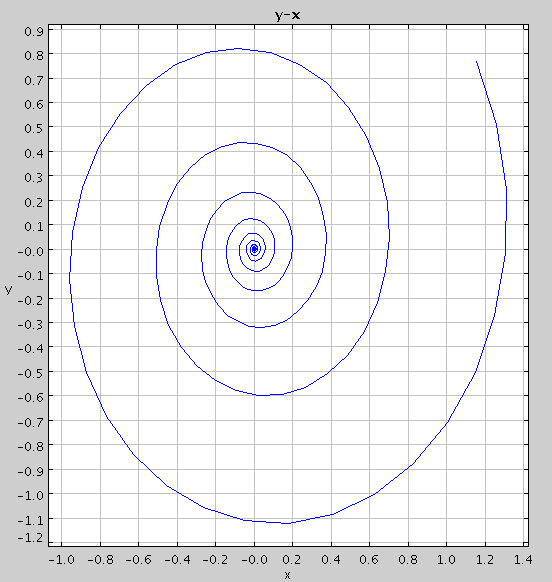
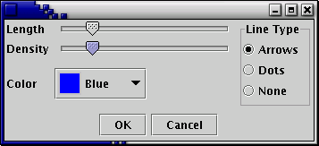
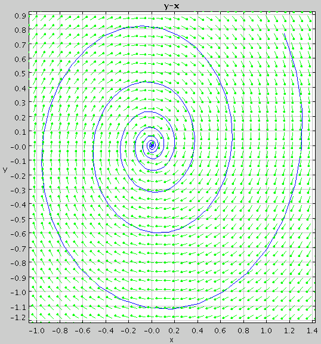

In this tutorial, we learn how to work with phase plots, direction fields, and user-defined functions.
Suppose, for example, that we want to explore the the following system of ODE's:
x' = -x + 10*y
y'= -y - 10*x
We could enter the system into ODE Toolkit exactly as shown above, but today let's be adventurous and define a function to help us. You might notice that the right-hand sides of both equations are rather similar: they are both in the form -w + 10*z, where w = x and x = y in the first equation and w = y and z = -x in the second equation. Thus, we want to define our function, f(w, z) such that it is equal to -w + 10*z. Then, we can define x' and y' in terms of f. To do this, enter the following text into ODE Toolkit:
x' = f(x, y)
y'= f(y, -x)
f(w, z) = -w + 10*z
Note that to define f, we gave its name followed by a comma-separeted list of its arguments (in parenthesis) on the left-hand side. The right-hand side was a function of those arguments. User-defined functions may make use of any parameters and functions defined elsewhere in the text-input box. For instance, had we been so inclined, we could have entered the system as:
x' = f(x, y)
y'= f(y, -x)
f(w, z) = a*w + g(z)
g(x) = b*x
a = -1
b = 10
Note that the argument to function g is called x, which is also a state variable of the system. This is perfectly fine. The x on the right-hand side of g refers to the argument, not the state variable.
When you have entered the system, click the Enter ODE button. Now go to the Solver Options menu by clicking on the Solver Options button and select the Rosenbrock solver. Now try plotting a solution curve forward in time to t = 10 from t = 0, with the initial conditions x = 1, y = 1 (if you are unsure how to do this, see Tutorial 1.
Note that there are five tabs below the graph, labeled x-t, y-t, y-x, Multi-Graph, and Data. The Multi-Graph tab shows the x-t plot and the y-t plot on the same graph. To see a phase plot of the solution curve, click on the y-x tab. Note that the axes have changed so that now x is plotted on the horizontal axis and y is plotted on the vertical axis. The graph should now look like this:

To see a direction field for the plot, right-click anywhere on the graph and select Direction Field in the pop-up menu. If you wish to change the direction field properties, right-click on the graph and select Direction Field Options from the pop-up menu. The following dialog box will appear:

The sliders Length and Density allow you to change the length of the direction field lines and how many field lines appear on the screen, respectively. Notice that as you slide them, the direction field is automatically updated. The color of the direction field lines can be changed with the drop-down box labeled Color, and the Line Type option allows you to change the look of the lines. Select None for straight lines, Dots for direction field lines with dots on the front, or Arrows for direction field lines with arrow heads. The graph might now look like this:
